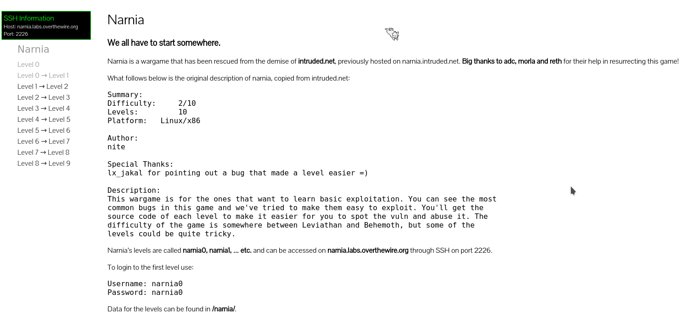

今天看了”渗透测试实用指南”一书,该书介绍了一个学习网站:Over the Wire(http://overthewire.org).该网站是一个在线夺旗挑战站点,专注于二进制攻击到网站攻击所有方面的知识
据初步了解,该网站有着不同系列的试题.在点开试题的链接后,网站会提供一个ssh连接的信息,这样我们就可以在本地终端通过ssh登录到试题的服务器

我这次所学习的试题名为narnia,可以看出,可以使用用户narnia0和密码narnia0登录到服务器
ssh连接至服务器后,切换到/narnia目录,可以看到里面有9个c源代码文件与对应的可执行文件:
1 | narnia0@narnia:~$ cd /narnia |
那么,我们现在开始做第一道题目吧
narnia0
题目
narnia0.c:
1 |
|
我们的目的是将val这个变量的值变为0xdeadbeef.这样,该程序会执行/bin/sh程序,它的suid标记使我们可以获取到位于/etc/narnia_pass目录下的narnia1用户的密码
解答
该题是缓冲区溢出的入门题…很容易看出,scanf函数接受24个字节的字符串,而buf数组则只能存放20个,那么最后4个字节就溢出了
那么,只要保证输入的最后4个字节是0xdeadbeef,该题就算完成了~
出于学习考虑,我们来看一下该程序的字节
注:为了便于查看,我把buf数组初始化为了19个B字符(最后一个为字符串结束符\0)
1 | $ hexdump -C narnia0|less |
可以看到,buf数组在var变量后边.不过,buf数组怎么不连续???嗯?
在网上搜了下,貌似现代系统为了防止很容易出现的缓冲区溢出漏洞攻击,而采取了多种防护措施,如DEP,栈保护,ASLR之类的
我尝试着关闭了,却依旧没用…咋回事儿?待以后解决吧…
补:使用gcc编译时,添加上-fno-stack-protector -Wl,-z,norelro -m32参数,使栈能够”正常溢出”
相关命令
这里记录下程序调试相关的命令,以备以后不时之需:
as hello.s -o hello.o:将代码文件汇编为链接文件
ld hello.o -o hello:将链接文件转化为可执行文件
readelf -a hello.o:查看elf文件的文件结构
hexdump -C hello.o:打印目标文件的字节
objdump -d hello.o:将机器指令反汇编
gcc main.c -g:编译代码,-g可以在用objdump反汇编时把c代码和汇编代码穿插起来显示
gcc -S main.c:只生成汇编代码main.s